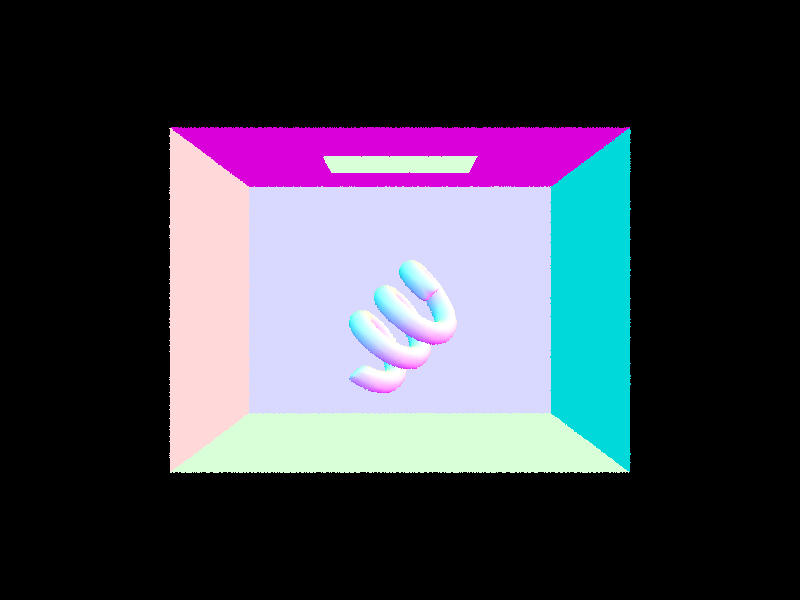
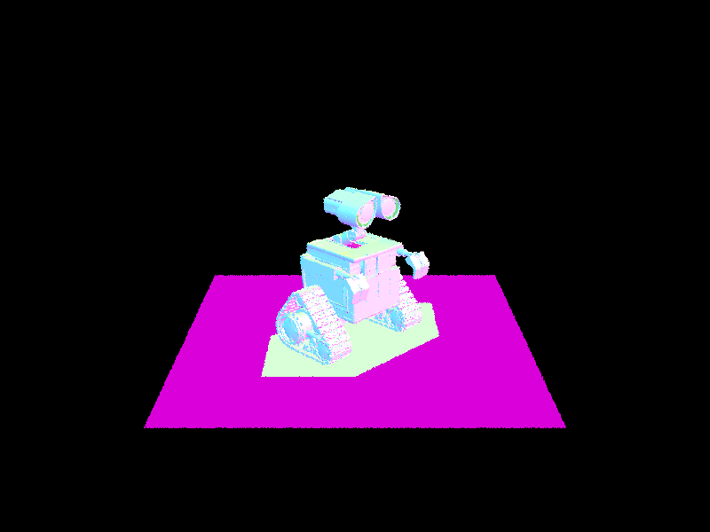
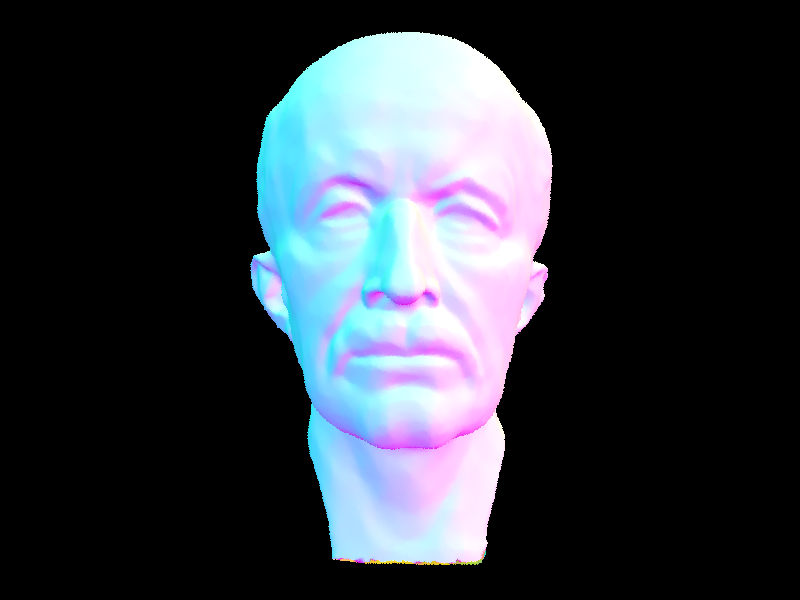
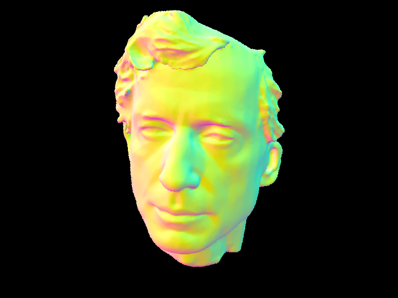

CS184 Project 3: Ray Pathtracer
https://samkim2025.github.io/cs184/3/index.html
Overview
In this assignment, I implemented core algorithms for Bézier curve and surface evaluation, vertex normal computation, and mesh subdivision techniques, including edge flips, splits, and Loop subdivision. The Bézier curve and patch implementations use de Casteljau’s algorithm to recursively compute intermediate points, ensuring smooth interpolation. The vertex normal calculation uses area-weighted triangle normals to provide a better approximation of smooth shading. The mesh subdivision methods allow for refining geometry while maintaining consistency, leveraging edge flips and splits for uniformity. Through this work, I gained insight into the mathematical foundations of geometric modeling and the impact of different data structures on computational efficiency and accuracy.
Part 1: Ray Generation and Scene Intersection
1. Walk through the ray generation and primitive intersection parts of the rendering pipeline.
- Ray Generation: Using raytrace_pixel(), I generate multiple sample rays through different points within the pixel for each pixel in the image. I determine the sample positions using a grid sampler that provides random offsets within the pixel. Each raw pixel coordinate (x,y) is then converted to normalized camera space coordinates in the range [0,1]×[0,1].
The camera finally generates rays from these normalized coordinates using camera->generate_ray(), which creates rays that originate from the camera position and pass through the corresponding point on the image plane.
- Scene Traversal: Each ray is cast into the scene to find intersections with scene primitives. The est_radiance_global_illumination() function traces the ray through the scene. The BVH (Bounding Volume Hierarchy) acceleration structure is used to efficiently find potential intersections.
- Primitive Intersection: Each ray is tested against primitives (triangles and spheres) to find the closest intersection point. Rays have parameters min_t and max_t that define the valid range for intersections. When an intersection is found, the ray's max_tmax_t is updated to this intersection distance, ensuring that future intersection tests only consider closer objects.
For each valid intersection, information such as the intersection point, surface normal, and material properties is stored.
- Shading: In the initial implementation, I used a simple debug visualization with the surface normal as color.
2. Explain the triangle intersection algorithm you implemented in your own words.
- The algorithm starts by computing two edge vectors of the triangle: e1 = p2 - p1 and e2 = p3 - p1. These define the triangle's plane and orientation.
- I calculated the determinant a using the cross product of the ray direction and one edge: h = cross(r.d, e2) and a = dot(e1, h). This determinant tells us if the ray is parallel to the triangle (if near zero) or at what angle it intersects.
- The algorithm directly computes barycentric coordinates u and v (with w = 1-u-v implied), which tell us if the intersection point is inside the triangle and allow us to interpolate vertex attributes (like normals) at the intersection point.
- For a valid intersection, we need the ray and triangle not to be parallel (|a| > epsilon), barycentric coordinates to be within bounds (0 ≤ u, v ≤ 1 and u+v ≤ 1), and the intersection distance t to be within the ray's valid range (min_t ≤ t ≤ max_t).
- If all checks pass, we interpolate the vertex normals using the barycentric coordinates to get the surface normal at the intersection point: isect->n = (w * n1 + u * n2 + v * n3).unit();
3. Show images with normal shading for a few small .dae files.
CB Empty

CB Spheres

CB Gems

CB Coil

Part 2: Bounding Volume Hierarchy
1. Walk through your BVH construction algorithm. Explain the heuristic you chose for picking the splitting point.
- For each node, I first compute a bounding box that includes all primitives in the current set.
- If the number of primitives is less than or equal to max_leaf_size (4 by default), I create a leaf node that stores references to these primitives.
- For internal nodes, I select the axis with the largest extent (x, y, or z) for splitting. This approach tends to create more balanced trees by splitting along the dimension where primitives are most spread out.
- Next, I use the average of centroids along the chosen axis as my splitting point. This heuristic works well for most scenes because it adapts to the actual distribution of objects in the scene, is more robust than simply taking the midpoint of the bounding box, and is computationally efficient compared to more complex heuristics.
- Then, I partition primitives based on whether their centroids fall below or above the split point.
- To prevent infinite recursion, I handle the case where all primitives might end up on one side of the split by falling back to sorting primitives along the chosen axis and splitting them in the middle.
- Finally, I recursively build the left and right subtrees until the entire scene is organized into a hierarchical structure.
2. Show images with normal shading for a few large .dae files that you can only render with BVH acceleration.
Wall-E

Max Planck

Peter

3. Compare rendering times on a few scenes with moderately complex geometries with and without BVH acceleration. Present your results in a one-paragraph analysis.
My BVH implementation dramatically improved rendering performance across all test scenes. Testing three models of increasing complexity, I found that the speedup becomes more significant as scene complexity grows. The cow model (5,856 primitives) rendered 370× faster, dropping from 25.38s to just 0.069s. The teapot (2,464 primitives) improved by 185×, from 11.25s to 0.061s.
Most impressive was the beast model (64,618 primitives), which saw a 5,250× speedup - from nearly 5 minutes to just 0.055s. These improvements directly correlate with the reduction in intersection tests per ray: the cow model dropped from 672 to 2.4 tests, the teapot from 307 to 2.1, and the beast from 8,575 to just 1.9.
Ray processing efficiency increased by over 250× in all cases, with the beast model reaching 5.65 million rays/second compared to its previous 0.0016 million. These results confirm the expected O(log n) vs. O(n) complexity improvement and show why BVH acceleration is essential for practical path tracing. Previously unrenderable scenes now process in less than a tenth of a second.
Part 3: Direct Illumination
1. Walk through both implementations of the direct lighting function.
...
2. Show some images rendered with both implementations of the direct lighting function.
Level 3
After three steps, we have 3 intermediate points (blue).
Level 4

After four steps, we have 2 intermediate points (blue).
Level 5

After five steps, we have the final point (red) that lies on the Bezier curve at parameter t.
3. Focus on one particular scene with at least one area light and compare the noise levels in soft shadows when rendering with 1, 4, 16, and 64 light rays (the -l flag) and with 1 sample per pixel (the -s flag) using light sampling, not uniform hemisphere sampling.
Level 3
After three steps, we have 3 intermediate points (blue).
Level 4
After four steps, we have 2 intermediate points (blue).
Level 5
After five steps, we have the final point (red) that lies on the Bezier curve at parameter t.
4. Compare the results between uniform hemisphere sampling and lighting sampling in a one-paragraph analysis.
Uniform hemisphere sampling and direct light sampling represent two fundamentally different approaches to solving the same integral in the rendering equation. Light sampling delivers superior results in almost all practical scenarios, especially for scenes with small or distant light sources.
With hemisphere sampling, the probability of randomly hitting a small light source is extremely low, resulting in high variance (noise) unless an impractically large number of samples are used. This is particularly evident in scenes with point lights, which hemisphere sampling essentially cannot handle.
Light sampling, by contrast, guarantees that every sample contributes to the final image, resulting in much lower noise for the same number of samples. The difference is most dramatic in scenes with focused lighting, where hemisphere sampling produces extremely noisy images even with high sample counts, while light sampling produces clean results with relatively few samples.
For scenes with very large area lights or highly occluded geometries, the gap narrows somewhat, but light sampling remains the more efficient technique. The only potential advantage of hemisphere sampling is its simplicity and the fact that it can accidentally capture some indirect illumination effects (light bouncing off non-emissive surfaces), though this is better handled with explicit global illumination techniques.
Part 4: Global Illumination
1. Walk through your implementation of the indirect lighting function.
...
2. Show some images rendered with global (direct and indirect) illumination. Use 1024 samples per pixel.
...
3. Pick one scene and compare rendered views first with only direct illumination, then only indirect illumination. Use 1024 samples per pixel. (You will have to edit PathTracer::at_least_one_bounce_radiance(...) in your code to generate these views.)
...
4. For CBbunny.dae, render the mth bounce of light with max_ray_depth set to 0, 1, 2, 3, 4, and 5 (the -m flag), and isAccumBounces=false. Explain in your write-up what you see for the 2nd and 3rd bounce of light, and how it contributes to the quality of the rendered image compared to rasterization. Use 1024 samples per pixel.
...
5. Compare rendered views of accumulated and unaccumulated bounces for CBbunny.dae with max_ray_depth set to 0, 1, 2, 3, 4, and 5 (the -m flag). Use 1024 samples per pixel.
...
6. Pick one scene and compare rendered views with various sample-per-pixel rates, including at least 1, 2, 4, 8, 16, 64, and 1024. Use 4 light rays.
...
Part 5: Adaptive Sampling
1. Explain adaptive sampling. Walk through your implementation of the adaptive sampling.
...
2. Pick two scenes and render them with at least 2048 samples per pixel. Show a good sampling rate image with clearly visible differences in sampling rate over various regions and pixels.
Include both your sample rate image, which shows your how your adaptive sampling changes depending on which part of the image you are rendering, and your noise-free rendered result. Use 1 sample per light and at least 5 for max ray depth.
...